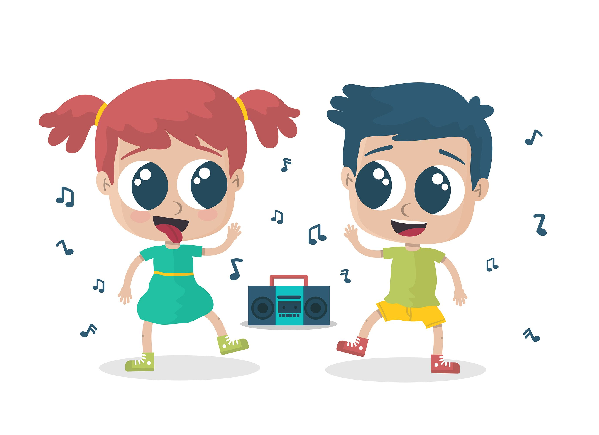

Observar las rondas y los juegos de tradición oral permite constatar cómo la literatura, la música, la acción dramática, la coreografía y el movimiento se conjugan. Desde este punto de vista, las experiencias artísticas artes plásticas, literatura, música, expresión dramática y corporal no pueden verse como compartimientos separados en la primera infancia, sino como las formas de habitar el mundo propias de estas edades, y como los lenguajes de los que se valen los niños y las niñas para expresarse de muchas formas, para conocer el mundo y descifrarse.

Actividad pintura con globos
Para realizar esta actividad lo que debemos hacer es inflar un globo con poco aire de modo que quede pequeño el globo inflado, luego le entregamos el globo al niño con una hoja de pintura esparcida, le pedimos al niño que de golpes pequeños en la hoja y así esparcir la pintura. Creando una mezcla de colores y potenciando el sentido visual y manual
Dibujo mágico
Entregar a cada niño, una cartulina color rojo y en un recipiente de pintura le pedimos que empape de un tenedor y lo coloque sobre la hoja haciendo un círculo que será la cara de un oso panda, luego aremos las orejas con cartulina negra de forma circular y haremos lo mismo con los ojos.
Música con mi cuerpo
Dentro de una caja se introducen tarjetas con acciones a realizar, con las partes de nuestro cuerpo, las cuales se irán realizando a medida que los niños vayan sacando su tarjeta de la caja. Un ejemplo podría ser caminar muy fuerte hasta que se escuchen nuestros pasos, aplaudir, etc.
Expresión corporal
Se coloca música de fondo para animar a los niños y se empieza a realizar acciones con su cabeza como lo son girar a la izquierda y girar la derecha, todo esto mientras hacemos gestos de alegría, luego con sus brazos moviéndolos de un lado a otro y de esta misma manera moviendo una parte del cuerpo diferente en cada cambio.
Modelar con plastilina
Se le entrega al niño plastilina y le pedimos que arme figuras como lo son estrellas, la letra inicial de su nombre, un sol y cualquier cosa que quiera imaginar el niño.
Juegos en línea
A continuación, mostraremos un listado de juegos en línea los cuales sirven para mejorar las habilidades de los niños en el ámbito del arte.